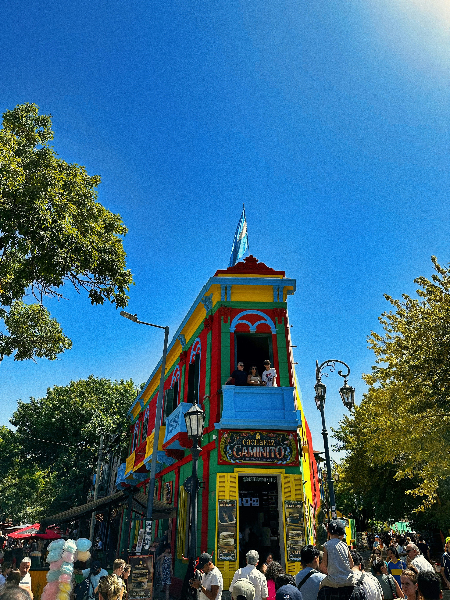

Buenos Aires y alrededores
Descubre museos, parques, puntos históricos y escapadas cercanas

Punto histórico
Caminito - La Boca
Calle museo con casas de chapa pintadas. Icono cultural de Buenos Aires.
1-3 horas
Gratis

Museo
MALBA - Museo de Arte Latinoamericano
Arte latinoamericano de los siglos XX y XXI. Colección permanente y exposiciones temporales.
2-3 horas
$$$

Parque
Jardín Botanico
7 hectáreas con más de 5.500 especies de plantas. Invernaderos y jardines temáticos.
1-2 horas
Gratis